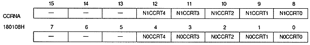
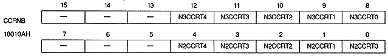
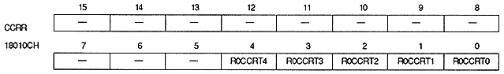
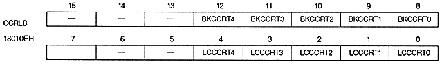

S0CCRT4 ~ S0CCRT0 | 180100H | bits 4-0 | Sprite register 0 |
S1CCRT4 to S1CCRT0 | 180100H | bits 12 to 8 | Sprite register 1 |
S2CCRT4 to S2CCRT0 | 180102H | bits 4 to 0 | Sprite register 2 |
S3CCRT4 to S3CCRT0 | 180102H | bits 12 to 8 | Sprite register 3 |
S4CCRT4 to S4CCRT0 | 180104H | bits 4 to 0 | Sprite register 4 |
S5CCRT4 to S5CCRT0 | 180104H | bits 12 to 8 | Sprite Register 5 |
S6CCRT4 to S6CCRT0 | 180106H | bits 4 to 0 | Sprite register 6 |
S7CCRT4 to S7CCRT0 | 180106H | bits 12 to 8 | Sprite register 7 |




Color calculation ratio bit (for scroll screen) : Color calculation ratio bit